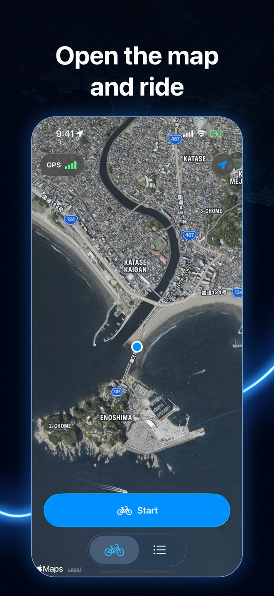
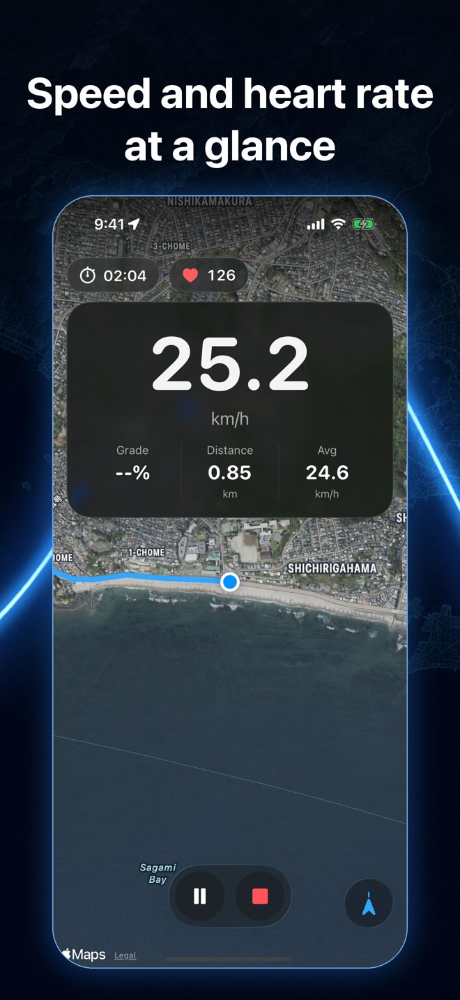
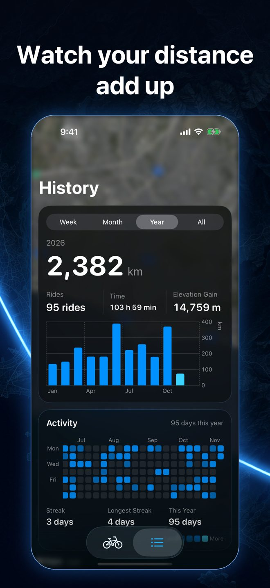
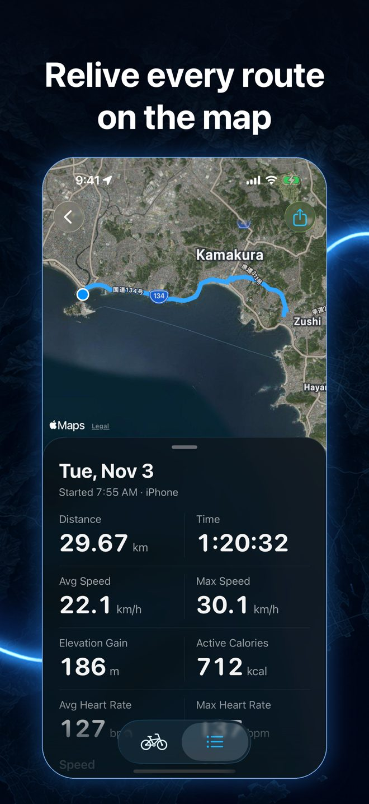
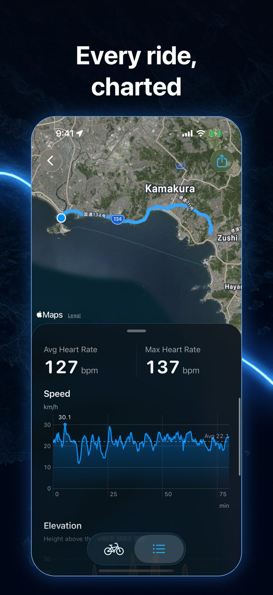

UltraSpeed
A cycling computer for iPhone and Apple Watch





Features
- Big speed, distance, grade, and heart rate readouts over a satellite map
- The map follows you with your direction of travel at the top
- Live numbers on the Lock Screen and in the Dynamic Island (Live Activity)
- Record rides on Apple Watch alone and send them to your iPhone
- Rides are saved to Health as workouts. Look back with history, stats, and charts
- Export rides as GPX to bring them into other services
Support
FAQ
Speed and distance don't appear
In Settings → Privacy & Security → Location Services, set UltraSpeed to "While Using the App" and turn on Precise Location. Readings settle once the GPS indicator turns green, which is quickest under an open sky.
Heart rate doesn't appear
Heart rate comes from Apple Watch (or a heart rate monitor connected to your iPhone). In the Health app, go to Sharing → Apps → UltraSpeed and allow it to read Heart Rate.
Rides recorded on Apple Watch don't show up on iPhone
Open UltraSpeed on your iPhone once to receive them. Keep your iPhone and Apple Watch close together with Bluetooth on.
Nothing shows on the Lock Screen
Turn on Settings → UltraSpeed → Live Activities.
Contact
Please send bug reports and requests through GitHub Issues.